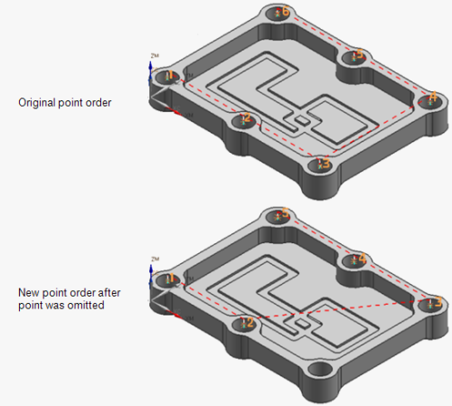

指定孔—点到点几何体对话框
单击指定孔  时，显示点到点几何体对话框。
时，显示点到点几何体对话框。
点到点几何体对话框包含多个选项。可使用这些选项选择和操控点，用于生成刀轨。
选项 |
描述 |
||||||||||||||
|---|---|---|---|---|---|---|---|---|---|---|---|---|---|---|---|
|
选择 |
打开选择对话框，选择表示孔顶部的几何体。当该对话框打开时，可根据名称或使用任何可用选项在图形窗口中选择几何体。 可使用以下不同类型的几何体来代表点到点工序中的孔：
|
||||||||||||||
附加 |
将选择的点添加到先前选定的钻加工几何体。 |
||||||||||||||
省略 |
忽略在先前定义的钻加工几何体上选择的点。 |
||||||||||||||
|
优化 |
打开对话框，在其中设置选项，以优化刀具行程，从而减少刀轨长度。 要获取更多信息，参见 优化对话框。 |
||||||||||||||
|
显示点 |
使用包含、省略、避让或优化选项后，显示多个点的新顺序。  |
||||||||||||||
避让 |
用于指定夹具或部件内障碍上方的“刀具安全距离”。必须定义“起点”、“终点”和“避让距离”。距离表示部件表面与刀尖之间的距离。 该选项与标准循环 RTRCTO 参数的不同之处在于：
|
||||||||||||||
反向 |
将先前选定的 GoTo 点的顺序设为相反方向。可使用该选项在相同的点集上执行背靠背工序，如，钻孔和攻丝。该过程允许您在第一个工序结束的位置处开始第二个工序。 避让关系保留。 |
||||||||||||||
圆弧轴控制 |
将片体中选定圆弧和孔的刀轴方位设为相反方向。 |
||||||||||||||
Rapto 偏置 |
打开对话框，在其中为每个选定的点、圆弧或孔指定 RAPTO 值。在“Rapto 偏置”位置处，进给率从“快进”进给率更改为“切削”进给率。
RAPTO 值可以为正，也可以为负。如果指定负的 RAPTO
|
||||||||||||||
规划完成 |
关闭点对话框，返回钻加工几何体对话框。 |
|
注释 |
指定几何体时仅使用选择选项。其余选项用于编辑已选定的几何体。 |